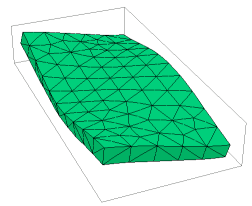

|
3d_plate |

  
|
|
3d_plate |
|
{ 3D_PLATE.PDE
This problem considers the oscillation modes of a glass plate in space
( no mountings to constrain motion ).
-- Submitted by John Trenholme, Lawrence Livermore Nat'l Lab.
}
TITLE 'Oscillation of a Glass Plate'
COORDINATES cartesian3
SELECT modes = 5 ngrid=10 errlim = 0.01 { 1 percent is good enough }
VARIABLES U { X displacement } V { Y displacement } W { Z displacement }
DEFINITIONS cm = 0.01 { converts centimeters to meters }
long = 20*cm { length of plate along Y axis } wide = 10*cm { width of plate along X axis } thick = 1.2*cm { thickness of plate along Z axis }
E = 50e9 { Youngs modulus in Pascals } nu = 0.256 { Poisson's ratio } rho = 2500 { density in kg/m^3 = 1000*[g/cc] }
{ constitutive relations - isotropic material } G = E/((1+nu)*(1-2*nu)) C11 = G*(1-nu) C12 = G*nu C13 = G*nu C22 = G*(1-nu) C23 = G*nu C33 = G*(1-nu) C44 = G*(1-2*nu)/2 |
 |
{ Strains }
ex = dx(U) ey = dy(V) ez = dz(W)
gxy = dy(U) + dx(V) gyz = dz(V) + dy(W) gzx = dx(W) + dz(U)
{ Stresses }
Sx = C11*ex + C12*ey + C13*ez
Sy = C12*ex + C22*ey + C23*ez
Sz = C13*ex + C23*ey + C33*ez
Txy = C44*gxy Tyz = C44*gyz Tzx = C44*gzx
{ find mean Y and Z translation and X rotation }
Vol = Integral(1)
{ scaling factor for displacement plots }
Mt =0.1*globalmax(magnitude(x,y,z))/globalmax(magnitude(U,V,W))
INITIAL VALUES
U = 1.0e-5 V = 1.0e-5 W = 1.0e-5
EQUATIONS
{ we assume sinusoidal oscillation at angular frequency omega =sqrt(lambda) }
U: dx(Sx) + dy(Txy) + dz(Tzx) + lambda*rho*U = 0 { X-displacement equation }
V: dx(Txy) + dy(Sy) + dz(Tyz) + lambda*rho*V = 0 { Y-displacement equation }
W: dx(Tzx) + dy(Tyz) + dz(Sz) + lambda*rho*W = 0 { Z-displacement equation }
CONSTRAINTS
integral(U)=0 { eliminate translations }
integral(V)=0
integral(W)=0
integral(dx(V)-dy(U)) = 0 { eliminate rotations }
integral(dy(W) - dz(V)) = 0
integral(dz(U) - dx(W)) = 0
EXTRUSION
surface "bottom" z = -thick / 2
layer "plate"
surface "top" z = thick / 2
BOUNDARIES
region 1 { all sides, and top and bottom, are free }
start( -wide/2, -long/2 )
line to ( wide/2, -long/2 )
line to ( wide/2, long/2 )
line to ( -wide/2, long/2 )
line to close
MONITORS
grid(x+Mt*U,y+Mt*V,z+Mt*W) as "Shape"
report sqrt(lambda)/(2*pi) as "Frequency in Hz"
PLOTS
contour( W ) on z = 0 as "Mid-plane Displacement"
report sqrt(lambda)/(2*pi) as "Frequency in Hz"
grid(x+Mt*U,y+Mt*V,z+Mt*W) as "Shape"
report sqrt(lambda)/(2*pi) as "Frequency in Hz"
summary
report lambda
report sqrt(lambda)/(2*pi) as "Frequency in Hz"
END